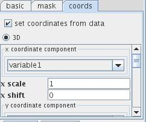

MODIFY COMPONENTS/COORDINATES
The module selects components, converts numeric data types, assigns minimum and maximum values of scalar field components, performs data masking, defines new mappings from field data, assembles vectors, performs basic vector operations, creates complex components from scalar field components.
Input data
Input is a field.
Output data
Output is an irregular or regular field and a geometry object of the field.
Computation parameters
Unless the auto check box on the right hand side of the run button is switched on the module is activated by pressing the run button. By default auto is switched off.
The table in the basic part of the user interface contains all names of the components of the input field, together with their minimum and maximum values.
Double click on the component name gives the possibility to change the name of the component.
For every component the user can choose a numeric conversion in the action column: left mouse click causes to appear a drop down list with numeric conversation instructions like noop, to byte, byte normalize, to short, short normalize, to int, to float, to double, log, atan, Null.
By default all components are retained and passed over to the output field. This is signalized by the check boxes in the retain column, which are switched on.
The user can change minimum and maximum value double clicking at the appropriate place in the min or max column and typing in a new value. Values below the minimum or above the maximum values are replaced with minimum or maximum values, respectively.

Applying a mask component to a data field allows to draw selected data areas.
To do so choose a field component from the mask drop down list in the mask interface. Corresponding field data below minimum value and above maximum value of the mask component are not drawn.
Minimum and maximum values are defined using the min/max slider, or typing the values into the text boxes below the slider.
If recompute min/max for data arrays check box is on the output data field is recomputed taking into account masking. By default this option is off.

If the set coordinates from data option in the coords user interface is switched on the user can define a new mapping declaring new data for x-, y- and/or z-coordinates.
To do so choose appropriate data components in the x-, y- and z-coordinate component drop down menus.
The scale and shift text input fields below the drop down menu allow to scale and shift data in the appropriate coordinate direction.
The vectors user interface allows to construct new vector components from scalar field components.
Double click an empty field in the Name column and enter a name for the new vector component. Left mouse click in the appropriate place in the x, y and z column causes to appear a drop down menu with all scalar field components from which the user can choose a component.
The norm of the vector component is calculated by switching on the last column of the table in this part of the interface.
The force 3D vectors check box forces the construction of 3D vectors adding zeros in place of non-declared vector components.
Switching on appropriate check boxes in a further table several operations for vector components of the input field can be carried out, i.e. calculation of the vector norm, normalizing vectors and splitting vector components.

The complex part of the computation interface allows to construct complex components from scalar field components.
To construct a complex component double click an empty field in the Name column and enter a name for the new component. Left mouse click in the appropriate place in the Re and Im column causes to appear a drop down menu with all scalar components of the input field and allows to choose a component for real and imaginary part of the new component.
Presentation parameters
Presentation tab contents are described in the common interfaces section unter the Presentation Panel entry.
Example
The modify components/coordinates module creates a vector component from scalar components of the UCD field. These vector component later is used in by the streamlines module.